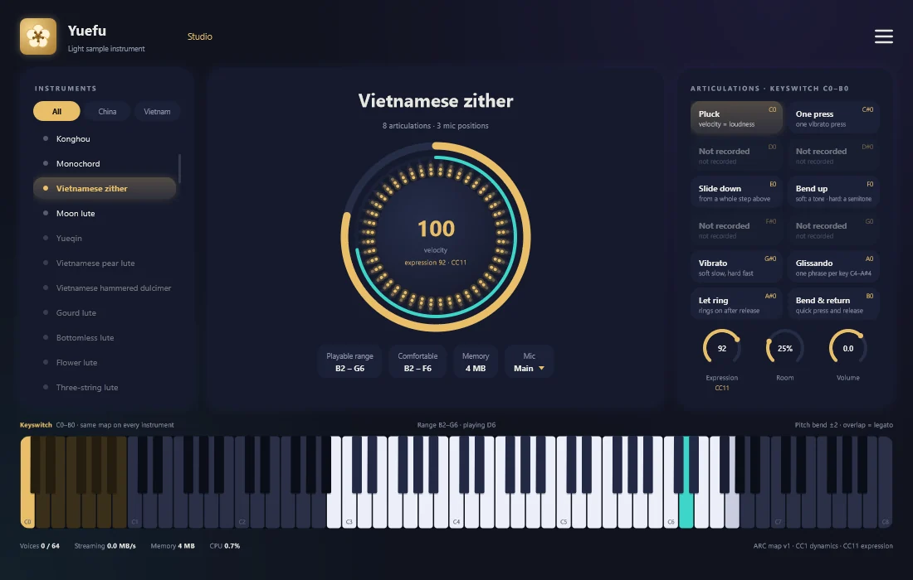
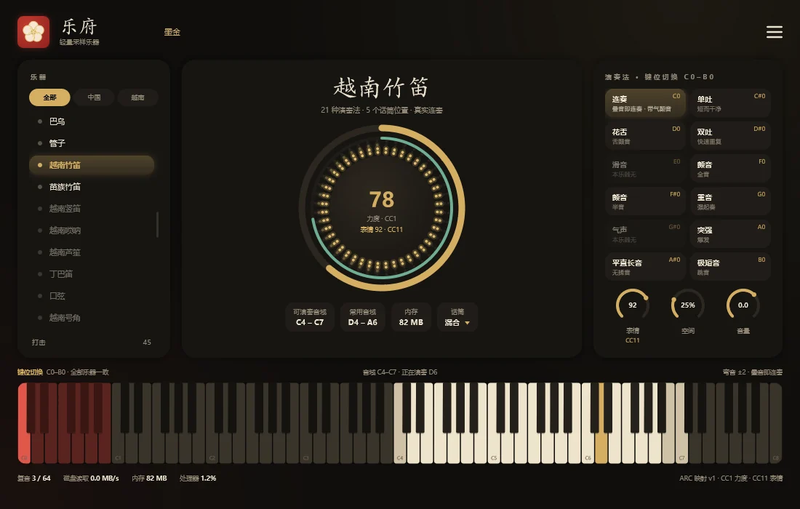
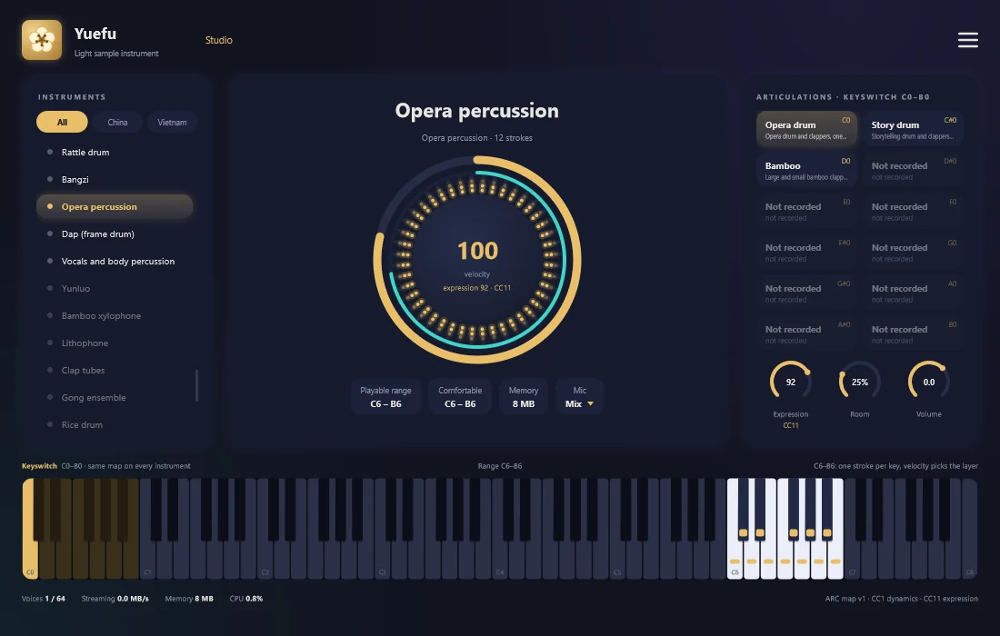

AuraLink Studio / Yuefu
The traditional instruments of China and Vietnam —
in one plug-in.
Sixty instruments, from guzheng, pipa, erhu and xiao to the Vietnamese zither, monochord and bamboo flute, with a whole section of drums, gongs and cymbals. Plain notes already sound played: slurs, slides, vibrato, tremolo and the ring of a string are in the instrument.

One plug-in, a whole traditional orchestra.
Every instrument shares one small set of controls and one way of playing, so moving from erhu to flute or from guzheng to the Vietnamese zither means nothing new to learn.
- 60 instruments, four families12 plucked and struck strings, 6 bowed strings, 13 winds and 29 percussion instruments. Choose in the list, filter by China or Vietnam.
- One keyswitch mapThe twelve keys C0–B0 choose the articulation on every instrument, and the same kind of technique sits on the same key: a part written for erhu plays on gaohu or on a flute.
- Recorded legato, on the beatOverlap two notes and they are joined by a slur or a slide. Yuefu looks a little ahead so that slurs land on the beat on playback; for live playing, switch the look-ahead off and it answers at once.
- Dynamics on CC1Bowed and wind instruments take their loudness and tone from CC1, as from the player's bow or breath. CC2 and CC21 set the depth and speed of the vibrato, CC5 the time of a slide.
- Light on memory, up to five micsThe recordings stay on disk and only the start of each sound is kept in memory: an instrument takes a few megabytes to a few tens of megabytes. Choose the mix, close, main, overhead or room microphone.
- Sixteen parts in one instanceIn Multi mode one Yuefu holds up to 16 instruments, each on its own MIDI channel, like a small ensemble in one plug-in.
Zither, monochord, moon lute, bamboo flute, Hmong flute — and more to come.
Five Vietnamese instruments are in version 1.0. The bamboo flute is the fullest bank in Yuefu, with five microphone positions and legato recorded between the notes. More Vietnamese instruments are being made: the names still dimmed in the list are what comes next.

A look for each language.
English, Chinese or Vietnamese, one language at a time. The look follows the language, or you choose it in the menu.


One stroke on each key.
Drums, gongs, cymbals, woodblocks and the percussion of Chinese opera. The key map shows on the keyboard; velocity is the strength of the stroke, and on many keys velocity 127 is another stroke, such as a roll or a double stroke. Each family has its own keys, so they layer on one channel.

Not yet priced, and still growing.
Yuefu is still being developed, above all its Vietnamese instruments: recording master players and the infrastructure both need funding. For now Yuefu is for fellow producers and people we know; every order comes with two seats for two computers. If you would like to use it and support it, write to us.